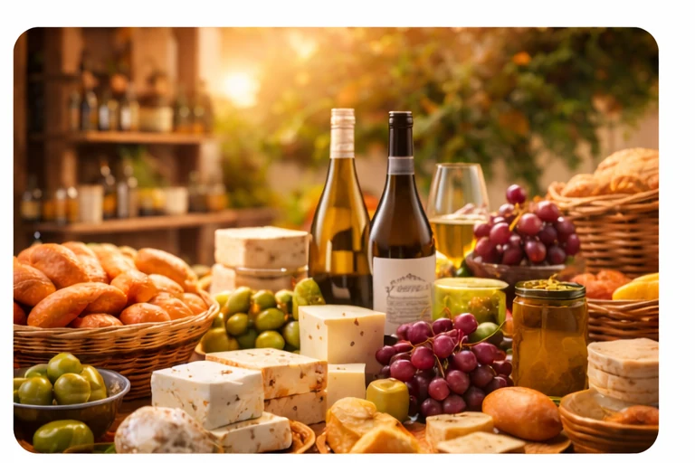
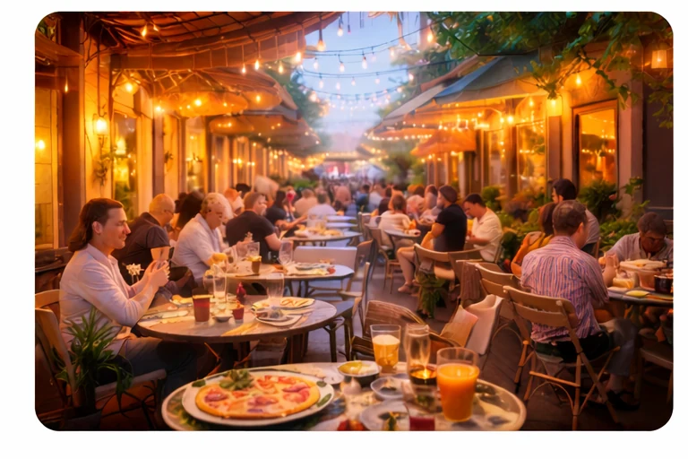
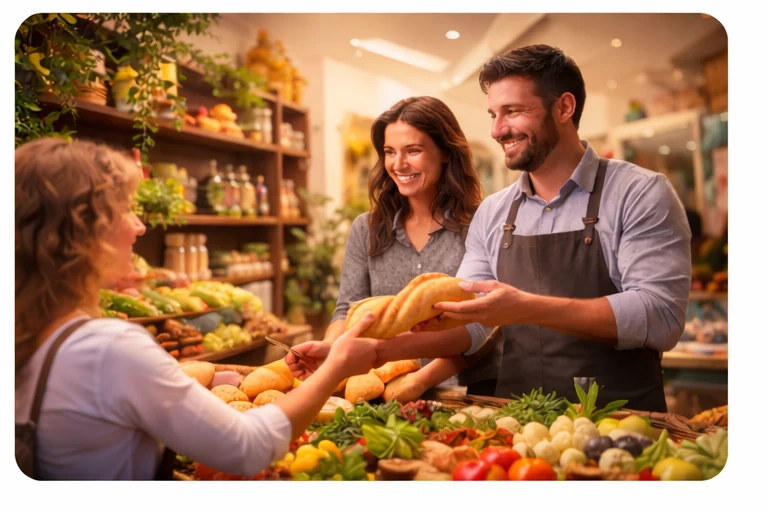
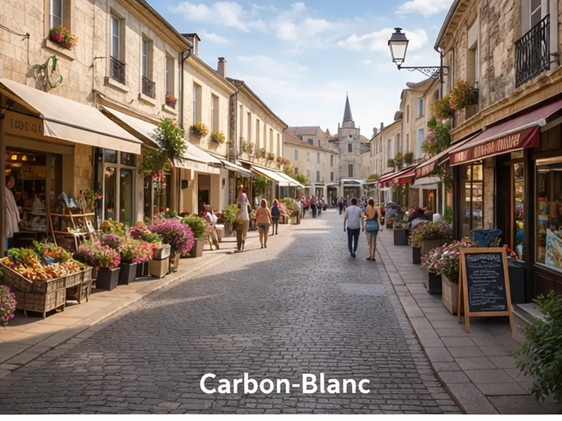
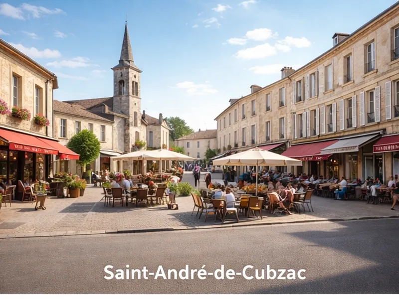
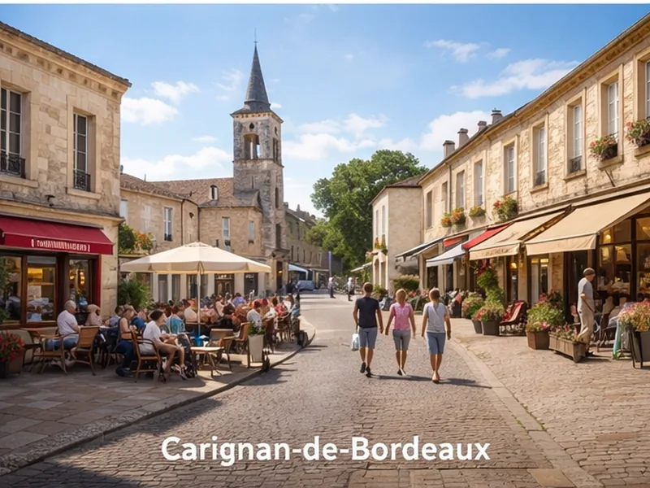
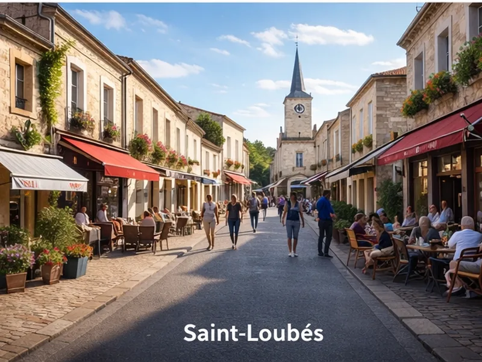

0
communes rencontrées
🚀 Projet en lancement
Commerces locaux • communes • habitants
Attirez plus de clients
dans votre commerce
Localeo incite les habitants à consommer dans les commerces de leur commune grâce à des packs de prestations locales
Et si votre prochain client était dejà dans votre commune ?
Localeo l'aide à venir jusqu'à vous
0
commerces rencontrés
0
packs en préparation
Le projet avance au contact du terrain avec des échanges concrets, des retours commerçants et une construction progressive des premières offres locales.
Nous échangeons avec vous
Boulangeries
Poissonneries
Boucheries
Fromagers
Primeurs
Coiffeurs
Chocolateries
Salons d'Esthétique
Salons de thé
Fleuristes
Cavistes
Pizzerias
Petites alimentations
Torréfacteurs
Des packs pour découvrir les commerces de la commune
Chaque pack associe plusieurs commerces complémentaires pour donner envie aux habitants de découvrir de nouvelles adresses locales.
BIEN-ÊTRE
Pack Bien-être
Coiffeur • Esthétique • Massage
Un parcours bien-être pour prendre soin de soi tout en découvrant les professionnels locaux.
Idéal pour se faire plaisir et découvrir de nouvelles adresses de la commune.

GOURMAND
Pack Gourmand
Caviste • Fromager • Primeur • Marchand de thé • Torréfacteur
Un pack pour les amateurs de bons produits et de découvertes gourmandes.
Parfait pour découvrir le savoir faire locale et suciter l'envie.

SAVEURS LOCALES
Pack Saveurs Locales
Restaurant • Pizzeria • Sushi • Bistrot • Bar
Une invitation à découvrir les lieux où l’on se retrouve pour manger et partager.
Pensé pour faire connaître plusieurs adresses conviviales d’une même commune.

MALIN
Pack Malin
Boulanger • Épicerie • Petite alimentation
Un pack simple et pratique pour les achats du quotidien dans les commerces de proximité.
Utile pour créer du passage régulier et fidéliser une clientèle de proximité.
Exemple concret d’un pack
Un pack permet aux habitants de découvrir plusieurs commerces de la commune à travers une petite expérience chez chacun.
🍷 Caviste
Dégustation découverte
🧀 Fromager
Sélection artisanale
🥕 Primeur
Panier gourmand
🍵 Marchand de thé
Assortiment découverte
Côté Terrain
Localeo commence son développement dans les communes de l’Entre-deux-Mers.

Carbon-Blanc
● Échanges en cours
15 commerces vus
7 intéressés

Saint-André-de-Cubzac
● Échanges en cours
18 commerces vus
9 intéressés

Latresne
● Packs en cours d'élaboration
10 commerces vus
4 intéressés

Carignan
● Échanges en cours
4 commerces vus
2 intéressés
Nous échangeons aussi avec ces communes
Tresses
Fargues Saint Hilaire
Bassens
Saint Caprais de Bordeaux
Cénac
Communes à venir
Artigues près Bordeaux
Yvrac
Montussan
Pompignac
Bouliac
Côté commerçants
Localeo construit des packs locaux avec les commerces de la commune pour donner envie aux habitants de découvrir plusieurs adresses locales.
Comment fonctionne un pack Localeo ?
Étape 1 — Rencontre des commerces
Nous rencontrons les commerçants pour identifier les activités complémentaires et imaginer un pack cohérent à l’échelle de la commune.
Étape 2 — Construction du pack
Nous construisons un pack attractif qui associe plusieurs commerces locaux autour d’un même thème ou d’un même usage.
Étape 3 — Promotion et diffusion
Localeo se charge de promouvoir et de diffuser les packs auprès des collectivités, des associations, des comités d’entreprises, des entreprises locales et des habitants.
Étape 4 — Découverte des commerces
Les habitants utilisent le pack pour découvrir les commerces participants au fil de leurs visites et de leurs expériences locales.
Pourquoi participer à un pack Localeo ?
Attirer de nouveaux clients locaux
Faire découvrir votre commerce
Créer des synergies avec d’autres commerçants
Dynamiser le commerce de proximité
Prêt à rejoindre l’aventure Localeo ?
Je souhaite participerFAQ commerçants
Est-ce que participer coûte quelque chose au commerçant?
Non. Rejoindre Localeo est gratuit et sans engagement. Vous proposez simplement une prestation dédiée qui pourra être intégrée dans un pack local. Localeo se rémunère sur la distribution du pack
Combien de commerces participent à un pack ?
Le nombre dépend de la commune, des complémentarités identifiées et de la cohérence de l’offre proposée aux habitants.
Puis-je proposer une idée d’offre ?
Oui. Les retours commerçants sont justement au cœur de la construction des premières offres locales.
Dois-je m’engager immédiatement ?
Il n'y a pas de frais d'engagement et ni d'abonnement. Cependant les packs commercialisés doivent être honorés.
Où peut-on acheter les packs ?
Les packs sont entièrement digitaux et disponibles via la plateforme Localeo.
Comment le client consomme t'il son pack ?
Une fois un pack acheté depuis la plateforme, le client recoit un QRCode unique qu'il vient présenter chez vous pour retirer ou exécuter sa prestation. Vous le scanner et c'est tout.
Comment suis-je rémunéré ?
Localeo vous reverse le montant correspondant aux prestations réalisées le 15 ou le 30 du mois.
Le pack a t'il une durée de validité ?
Oui, l'idée est de créer l'envie et de consommer rapidement dans un délai de 3 mois.